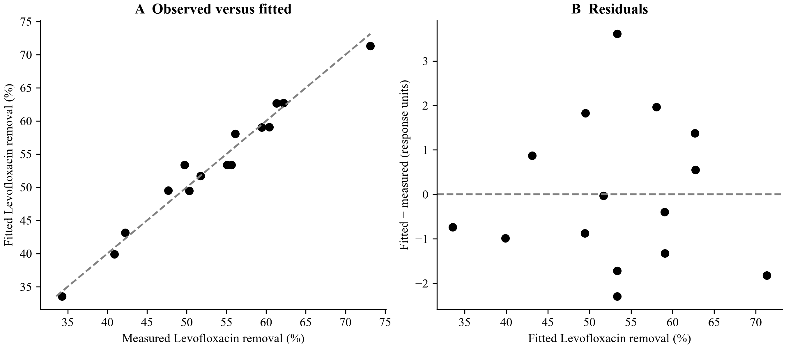
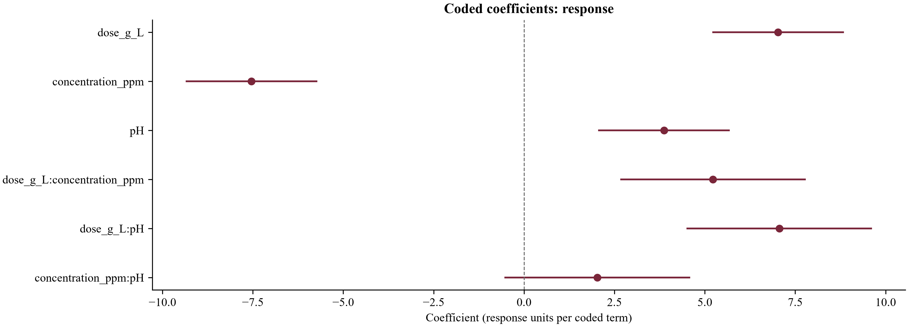
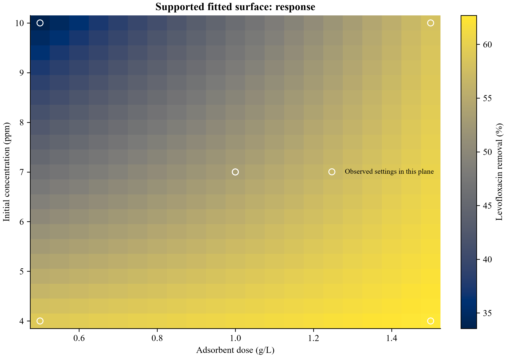
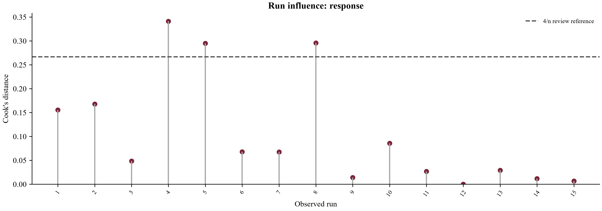

Input: levo_design.csv; 15 rows. Computation completed; evidence availability: complete.
Levofloxacin removal (%): 15 matched runs; fitted R² = 0.9708; residual sum of squares = 38.8985. These are in-sample fits, not independent confirmation experiments.

Figure 1. In-sample fit and residuals for response; these panels do not show independent prediction validation. All responses are retained in the result tables.

Dots show coefficients for non-intercept terms. Lines are the existing pointwise 95% coefficient intervals where estimable and independence was declared. An absent interval is not zero uncertainty. Full coefficients, including intercept, are retained in coefficients.csv.

Fitted values on the common supported grid; pH fixed at 7. Open circles mark 7 observed settings in this plane. Blank cells are outside the observed design hull. The pixel boundaries show grid cells; predictions are defined at the grid centres. No independent confirmation or continuous optimum is implied.

Cook's distance measures fitted-model sensitivity under its assumptions. The 4/n line is a screening heuristic only; no observation is automatically removed. Internal studentization and leverage are exported in influence_diagnostics.csv.
Part 1/3.
| response | n | r2_fitted | adjusted_r2 | residual_ss | residual_df |
|---|---|---|---|---|---|
| response | 15 | 0.970819 | 0.948933 | 38.8985 | 8 |
Part 2/3.
| response | pure_error_ss | pure_error_df | lack_of_fit_ss | lack_of_fit_df | lack_of_fit_f |
|---|---|---|---|---|---|
| response | 21.1813 | 2 | 17.7173 | 6 | 0.27882 |
Part 3/3.
| response | lack_of_fit_p | leave_one_run_out_press |
|---|---|---|
| response | 0.905509 | 118.44 |
Part 1/2.
| response | source | ss | df | ms | f |
|---|---|---|---|---|---|
| response | model | 1294.11 | 6 | 215.685 | 44.3585 |
| response | residual | 38.8985 | 8 | 4.86232 | NaN |
| response | total_corrected | 1333.01 | 14 | 95.215 | NaN |
Part 2/2.
| response | p | ss_convention | inference |
|---|---|---|---|
| response | 1.03749e-05 | overall regression with intercept; no term-level SS | available under independent-run assumptions |
| response | NaN | overall regression with intercept; no term-level SS | available under independent-run assumptions |
| response | NaN | overall regression with intercept; no term-level SS | available under independent-run assumptions |
Part 1/2.
| response | direction | factor::dose_g_L | factor::concentration_ppm | factor::pH | predicted_response |
|---|---|---|---|---|---|
| response | maximise | 1.5 | 7 | 10 | 71.3037 |
Part 2/2.
| response | prediction_interval95_low | prediction_interval95_high | inside_observed_convex_hull | measured_confirmation |
|---|---|---|---|---|
| response | 64.9391 | 77.6682 | True | False |
Complete tables are supplied as CSV; previews below retain the stated row and column limits.
| column | missing_cells | observed_cells | unique_observed |
|---|---|---|---|
| sample_id | 0 | 15 | 15 |
| dose_g_L | 0 | 15 | 3 |
| concentration_ppm | 0 | 15 | 3 |
| pH | 0 | 15 | 3 |
| response | 0 | 15 | 15 |
| sample_id | reason |
|---|
Showing 24 of 45 rows; the complete table is in observed_factor_values.csv.
| sample_id | factor | value |
|---|---|---|
| 1 | dose_g_L | 0.5 |
| 1 | concentration_ppm | 4 |
| 1 | pH | 7 |
| 2 | dose_g_L | 1.5 |
| 2 | concentration_ppm | 4 |
| 2 | pH | 7 |
| 3 | dose_g_L | 0.5 |
| 3 | concentration_ppm | 10 |
| 3 | pH | 7 |
| 4 | dose_g_L | 1.5 |
| 4 | concentration_ppm | 10 |
| 4 | pH | 7 |
| 5 | dose_g_L | 0.5 |
| 5 | concentration_ppm | 7 |
| 5 | pH | 4 |
| 6 | dose_g_L | 1.5 |
| 6 | concentration_ppm | 7 |
| 6 | pH | 4 |
| 7 | dose_g_L | 0.5 |
| 7 | concentration_ppm | 7 |
| 7 | pH | 10 |
| 8 | dose_g_L | 1.5 |
| 8 | concentration_ppm | 7 |
| 8 | pH | 10 |
| factor | low | centre | high | half_range |
|---|---|---|---|---|
| dose_g_L | 0.5 | 1 | 1.5 | 0.5 |
| concentration_ppm | 4 | 7 | 10 | 3 |
| pH | 4 | 7 | 10 | 3 |
| complete_runs | unique_settings | coefficients | rank | residual_df | condition_number |
|---|---|---|---|---|---|
| 15 | 13 | 7 | 7 | 8 | 1.93649 |
| model | terms | rank | estimable |
|---|---|---|---|
| linear | 4 | 4 | True |
| 2fi | 7 | 7 | True |
| additive_quadratic | 7 | 7 | True |
| quadratic | 10 | 10 | True |
| role | original_label | export_column |
|---|---|---|
| factors | dose_g_L | factor::dose_g_L |
| factors | concentration_ppm | factor::concentration_ppm |
| factors | pH | factor::pH |
| predictions | response | prediction::response |
| response | term | coefficient_coded | standard_error | ci95_low | ci95_high |
|---|---|---|---|---|---|
| response | Intercept | 53.3487 | 0.569346 | 52.0358 | 54.6616 |
| response | dose_g_L | 7.025 | 0.779609 | 5.22722 | 8.82278 |
| response | concentration_ppm | -7.5375 | 0.779609 | -9.33528 | -5.73972 |
| response | pH | 3.87 | 0.779609 | 2.07222 | 5.66778 |
| response | dose_g_L:concentration_ppm | 5.225 | 1.10253 | 2.68255 | 7.76745 |
| response | dose_g_L:pH | 7.06 | 1.10253 | 4.51755 | 9.60245 |
| response | concentration_ppm:pH | 2.025 | 1.10253 | -0.517445 | 4.56745 |
Part 1/2.
| sample_id | response | reference | prediction | residual | leverage |
|---|---|---|---|---|---|
| 1 | response | 60.41 | 59.0862 | -1.32383 | 0.566667 |
| 2 | response | 61.31 | 62.6862 | 1.37617 | 0.566667 |
| 3 | response | 34.3 | 33.5612 | -0.738833 | 0.566667 |
| 4 | response | 56.1 | 58.0612 | 1.96117 | 0.566667 |
| 5 | response | 47.69 | 49.5137 | 1.82367 | 0.566667 |
| 6 | response | 50.32 | 49.4437 | -0.876333 | 0.566667 |
| 7 | response | 42.26 | 43.1337 | 0.873667 | 0.566667 |
| 8 | response | 73.13 | 71.3037 | -1.82633 | 0.566667 |
| 9 | response | 59.44 | 59.0412 | -0.398833 | 0.566667 |
| 10 | response | 40.9 | 39.9162 | -0.983833 | 0.566667 |
| 11 | response | 62.18 | 62.7312 | 0.551167 | 0.566667 |
| 12 | response | 51.74 | 51.7062 | -0.0338333 | 0.566667 |
| 13 | response | 49.74 | 53.3487 | 3.60867 | 0.0666667 |
| 14 | response | 55.64 | 53.3487 | -2.29133 | 0.0666667 |
| 15 | response | 55.07 | 53.3487 | -1.72133 | 0.0666667 |
Part 2/2.
| sample_id | prediction_kind |
|---|---|
| 1 | fitted_on_same_runs |
| 2 | fitted_on_same_runs |
| 3 | fitted_on_same_runs |
| 4 | fitted_on_same_runs |
| 5 | fitted_on_same_runs |
| 6 | fitted_on_same_runs |
| 7 | fitted_on_same_runs |
| 8 | fitted_on_same_runs |
| 9 | fitted_on_same_runs |
| 10 | fitted_on_same_runs |
| 11 | fitted_on_same_runs |
| 12 | fitted_on_same_runs |
| 13 | fitted_on_same_runs |
| 14 | fitted_on_same_runs |
| 15 | fitted_on_same_runs |
Showing 12 of 7501 rows; the complete table is in candidates.csv.
| factor::dose_g_L | factor::concentration_ppm | factor::pH | prediction::response |
|---|---|---|---|
| 0.5 | 4 | 7 | 59.0862 |
| 0.5 | 4.3 | 6.7 | 58.3112 |
| 0.5 | 4.3 | 7 | 57.8099 |
| 0.5 | 4.3 | 7.3 | 57.3087 |
| 0.5 | 4.6 | 6.4 | 57.4957 |
| 0.5 | 4.6 | 6.7 | 57.0147 |
| 0.5 | 4.6 | 7 | 56.5337 |
| 0.5 | 4.6 | 7.3 | 56.0527 |
| 0.5 | 4.6 | 7.6 | 55.5717 |
| 0.5 | 4.9 | 6.1 | 56.6397 |
| 0.5 | 4.9 | 6.4 | 56.1789 |
| 0.5 | 4.9 | 6.7 | 55.7182 |
Part 1/2.
| response | group | n | reference_mean | prediction_mean | rmse |
|---|---|---|---|---|---|
| response | 1 | 1 | 60.41 | 59.0862 | 1.32383 |
| response | 10 | 1 | 40.9 | 39.9162 | 0.983833 |
| response | 11 | 1 | 62.18 | 62.7312 | 0.551167 |
| response | 12 | 1 | 51.74 | 51.7062 | 0.0338333 |
| response | 13 | 1 | 49.74 | 53.3487 | 3.60867 |
| response | 14 | 1 | 55.64 | 53.3487 | 2.29133 |
| response | 15 | 1 | 55.07 | 53.3487 | 1.72133 |
| response | 2 | 1 | 61.31 | 62.6862 | 1.37617 |
| response | 3 | 1 | 34.3 | 33.5612 | 0.738833 |
| response | 4 | 1 | 56.1 | 58.0612 | 1.96117 |
| response | 5 | 1 | 47.69 | 49.5137 | 1.82367 |
| response | 6 | 1 | 50.32 | 49.4437 | 0.876333 |
| response | 7 | 1 | 42.26 | 43.1337 | 0.873667 |
| response | 8 | 1 | 73.13 | 71.3037 | 1.82633 |
| response | 9 | 1 | 59.44 | 59.0412 | 0.398833 |
Part 2/2.
| response | mae | bias |
|---|---|---|
| response | 1.32383 | -1.32383 |
| response | 0.983833 | -0.983833 |
| response | 0.551167 | 0.551167 |
| response | 0.0338333 | -0.0338333 |
| response | 3.60867 | 3.60867 |
| response | 2.29133 | -2.29133 |
| response | 1.72133 | -1.72133 |
| response | 1.37617 | 1.37617 |
| response | 0.738833 | -0.738833 |
| response | 1.96117 | 1.96117 |
| response | 1.82367 | 1.82367 |
| response | 0.876333 | -0.876333 |
| response | 0.873667 | 0.873667 |
| response | 1.82633 | -1.82633 |
| response | 0.398833 | -0.398833 |
Part 1/2.
| response | reference_bin | lower_reference | upper_reference | reference_mean | n |
|---|---|---|---|---|---|
| response | 0 | 34.3 | 48.715 | 41.2875 | 4 |
| response | 1 | 48.715 | 55.07 | 51.7175 | 4 |
| response | 2 | 55.07 | 59.925 | 57.06 | 3 |
| response | 3 | 59.925 | 73.13 | 64.2575 | 4 |
Part 2/2.
| response | n_groups | rmse | group_rmse | bias |
|---|---|---|---|---|
| response | 4 | 1.18352 | 1.18352 | 0.243667 |
| response | 4 | 2.04662 | 2.04662 | 0.244292 |
| response | 3 | 1.75646 | 1.75646 | -0.243 |
| response | 4 | 1.3496 | 1.3496 | -0.305708 |
Part 1/2.
| sample_id | response | leverage | internal_studentized_residual | cooks_distance | reference_cooks_threshold |
|---|---|---|---|---|---|
| 1 | response | 0.566667 | -0.912012 | 0.155385 | 0.266667 |
| 2 | response | 0.566667 | 0.948066 | 0.167913 | 0.266667 |
| 3 | response | 0.566667 | -0.508995 | 0.0483989 | 0.266667 |
| 4 | response | 0.566667 | 1.35108 | 0.341013 | 0.266667 |
| 5 | response | 0.566667 | 1.25636 | 0.294872 | 0.266667 |
| 6 | response | 0.566667 | -0.603722 | 0.0680896 | 0.266667 |
| 7 | response | 0.566667 | 0.601884 | 0.0676759 | 0.266667 |
| 8 | response | 0.566667 | -1.25819 | 0.295735 | 0.266667 |
| 9 | response | 0.566667 | -0.274763 | 0.0141034 | 0.266667 |
| 10 | response | 0.566667 | -0.67778 | 0.0858194 | 0.266667 |
| 11 | response | 0.566667 | 0.379709 | 0.0269345 | 0.266667 |
| 12 | response | 0.566667 | -0.0233084 | 0.000101492 | 0.266667 |
| 13 | response | 0.0666667 | 1.69397 | 0.0292811 | 0.266667 |
| 14 | response | 0.0666667 | -1.07559 | 0.0118051 | 0.266667 |
| 15 | response | 0.0666667 | -0.808025 | 0.0066623 | 0.266667 |
Part 2/2.
| sample_id | exceeds_reference_threshold | status |
|---|---|---|
| 1 | False | descriptive influence flag; retain observation |
| 2 | False | descriptive influence flag; retain observation |
| 3 | False | descriptive influence flag; retain observation |
| 4 | True | descriptive influence flag; retain observation |
| 5 | True | descriptive influence flag; retain observation |
| 6 | False | descriptive influence flag; retain observation |
| 7 | False | descriptive influence flag; retain observation |
| 8 | True | descriptive influence flag; retain observation |
| 9 | False | descriptive influence flag; retain observation |
| 10 | False | descriptive influence flag; retain observation |
| 11 | False | descriptive influence flag; retain observation |
| 12 | False | descriptive influence flag; retain observation |
| 13 | False | descriptive influence flag; retain observation |
| 14 | False | descriptive influence flag; retain observation |
| 15 | False | descriptive influence flag; retain observation |
| capability | available | level | reason |
|---|---|---|---|
| input_quality | True | descriptive | Parsed rows and selected field availability are retained. |
| paired_descriptions | True | descriptive | Available finite reference/comparison pairs; no missing reference is invented. |
| fitted_model | True | fitting | Rank-supported coefficients are available. |
| held_out_evaluation | False | evaluation | No held-out model evaluation is supported by this run. |
| conditional_uncertainty | True | inference | Only the stated estimand and confirmed independence/variance assumptions support these intervals. |
{
"input_sha256": "12f0b29df96c30c96910a8cb38a7103cb7933898b25de17b8d481bdc8e0cd4e1",
"factors": [
"dose_g_L",
"concentration_ppm",
"pH"
],
"candidate_columns": {
"factors": {
"dose_g_L": "factor::dose_g_L",
"concentration_ppm": "factor::concentration_ppm",
"pH": "factor::pH"
},
"predictions": {
"response": "prediction::response"
}
},
"responses": [
"response"
],
"model": "2fi",
"response_mode": "matched",
"grid_points_per_factor": 21,
"independent_runs_confirmed": true,
"candidate_status": "supported finite grid",
"software_source_sha256": "5c0dc36342d076126ecf4ab93b52c252873a213223e17ec732d253218d62a267",
"source_hash_definition": "SHA256 of sorted relative Python paths and file bytes, each terminated by a NUL byte",
"application": "matcheddoe",
"software_version": "0.5.2",
"configuration_schema_version": "1.2",
"call_parameters": {
"factors": [
"dose_g_L",
"concentration_ppm",
"pH"
],
"responses": [
"response"
],
"id_col": "sample_id",
"model": "2fi",
"directions": {
"response": "maximise"
},
"grid_points": 21,
"independent_runs": true,
"reported_equations": null,
"response_mode": "matched",
"max_design_cells": 2000000,
"max_grid_candidates": 100000,
"column_metadata": {
"response": {
"label": "Levofloxacin removal",
"unit": "%"
},
"dose_g_L": {
"label": "Adsorbent dose",
"unit": "g/L"
},
"concentration_ppm": {
"label": "Initial concentration",
"unit": "ppm"
},
"pH": {
"label": "pH",
"unit": "dimensionless"
}
},
"input_name": "levo_design.csv",
"provenance": {
"kind": "bundled_example",
"example": "levo_design.csv"
}
},
"input_name": "levo_design.csv",
"columns": {
"sample_id": {
"label": "sample_id",
"unit": "not provided"
},
"dose_g_L": {
"label": "Adsorbent dose",
"unit": "g/L"
},
"concentration_ppm": {
"label": "Initial concentration",
"unit": "ppm"
},
"pH": {
"label": "pH",
"unit": "dimensionless"
},
"response": {
"label": "Levofloxacin removal",
"unit": "%"
}
},
"provenance": {
"kind": "bundled_example",
"example": "levo_design.csv",
"original_source": {
"id": "D03",
"repository_id": "v28r4bz6s5",
"version": 1,
"title": "Dataset on photocatalytic degradation of LEVO using HAp photocatalyst Optimization by RSM",
"creators": [
"Adrian Go",
"Francis dela Rosa",
"Drexel Camacho",
"Eric Punzalan"
],
"doi": "10.17632/v28r4bz6s5.1",
"source_url": "https://data.mendeley.com/datasets/v28r4bz6s5/1",
"license": "CC-BY-4.0",
"license_url": "https://creativecommons.org/licenses/by/4.0/",
"checked_on": "2026-09-07",
"raw_data_included_in_delivery": false,
"downloads": [
{
"file": "LEVO_RSM.xlsx",
"url": "https://data.mendeley.com/public-files/datasets/v28r4bz6s5/files/6a351c2a-3cf8-4b5c-88cf-578e30c8944a/file_downloaded",
"bytes": 314914,
"sha256": "9d04295ae8e7d66f4feaf3eef83135e02b1e84e1156a74fd148fff686e52d5ba"
}
],
"processed_examples_included": true,
"equivalent_cited_deposit": {
"doi": "10.17632/h82gspgkpf.2",
"source_url": "https://data.mendeley.com/datasets/h82gspgkpf/2",
"relationship": "P30 cites this deposit. Its public file metadata gives the same SHA256 and 314914-byte workbook as the bundled source deposit.",
"metadata_checked_on": "2026-09-07"
}
},
"transformations": "15 measured BBD Model sheet runs; dose, concentration and pH copied in actual units. Inconsistent printed interaction labels and confirmation claims excluded. Only two pure-error degrees of freedom.",
"column_metadata": {
"response": {
"label": "Levofloxacin removal",
"unit": "%"
},
"dose_g_L": {
"label": "Adsorbent dose",
"unit": "g/L"
},
"concentration_ppm": {
"label": "Initial concentration",
"unit": "ppm"
},
"pH": {
"label": "pH",
"unit": "dimensionless"
}
},
"prepared_csv_sha256": "4cc7623266600a3638934534ec4a45dead7985c40a35256b10f4ad7e021949b2",
"code_license": "MIT",
"data_license": "CC-BY-4.0"
},
"input_hash_definition": "SHA256 of parsed table serialized as canonical CSV; not original file bytes",
"n_input_rows": 15,
"computation_status": "completed",
"evidence_status": "complete",
"deterministic_protocol": {
"evaluation": "in-sample fitted design",
"candidate_grid_points_per_factor": 21
},
"input_preparation": {
"generated_row_id": null,
"row_id_meaning": "Source observation ID",
"import": {
"worksheet": null,
"header_row": 1,
"separator": ",",
"encoding": "utf-8-sig",
"notices": [],
"decimal": ".",
"missing_tokens": [],
"column_mapping": [
{
"position": 1,
"source_header": "sample_id",
"analysis_header": "sample_id"
},
{
"position": 2,
"source_header": "dose_g_L",
"analysis_header": "dose_g_L"
},
{
"position": 3,
"source_header": "concentration_ppm",
"analysis_header": "concentration_ppm"
},
{
"position": 4,
"source_header": "pH",
"analysis_header": "pH"
},
{
"position": 5,
"source_header": "response",
"analysis_header": "response"
}
],
"max_cells": 2000000,
"max_bytes": 52428800
},
"original_parsed_input_sha256": "12f0b29df96c30c96910a8cb38a7103cb7933898b25de17b8d481bdc8e0cd4e1"
},
"diagnostics": [
{
"table": "group_diagnostics",
"question": "Which physical groups have the largest errors?",
"interpretation": "One summary per method and physical group; group means and within-group RMSE are different quantities. No rows are excluded.",
"rows": 15
},
{
"table": "reference_range_diagnostics",
"question": "Does error vary across the measured response range?",
"interpretation": "Up to four shared reference-quantile bins, determined after prediction for diagnosis only. Bin counts and group counts are retained; no uncertainty is inferred.",
"rows": 4
},
{
"table": "influence_diagnostics",
"question": "Are fitted coefficients sensitive to a particular observed run?",
"interpretation": "Internal studentization and Cook's distance require estimable residual variance and the independence declaration. 4/n is a review heuristic, never an automatic removal rule.",
"rows": 15
}
],
"capabilities": [
{
"capability": "input_quality",
"available": true,
"level": "descriptive",
"reason": "Parsed rows and selected field availability are retained."
},
{
"capability": "paired_descriptions",
"available": true,
"level": "descriptive",
"reason": "Available finite reference/comparison pairs; no missing reference is invented."
},
{
"capability": "fitted_model",
"available": true,
"level": "fitting",
"reason": "Rank-supported coefficients are available."
},
{
"capability": "held_out_evaluation",
"available": false,
"level": "evaluation",
"reason": "No held-out model evaluation is supported by this run."
},
{
"capability": "conditional_uncertainty",
"available": true,
"level": "inference",
"reason": "Only the stated estimand and confirmed independence/variance assumptions support these intervals."
}
],
"evidence_summary": "Results with conditional uncertainty; review assumptions",
"import_options": {},
"export_config": {
"factors": [
"dose_g_L",
"concentration_ppm",
"pH"
],
"responses": [
"response"
],
"id_col": "sample_id",
"model": "2fi",
"directions": {
"response": "maximise"
},
"grid_points": 21,
"independent_runs": true,
"reported_equations": null,
"response_mode": "matched",
"max_design_cells": 2000000,
"max_grid_candidates": 100000,
"column_metadata": {
"response": {
"label": "Levofloxacin removal",
"unit": "%"
},
"dose_g_L": {
"label": "Adsorbent dose",
"unit": "g/L"
},
"concentration_ppm": {
"label": "Initial concentration",
"unit": "ppm"
},
"pH": {
"label": "pH",
"unit": "dimensionless"
}
},
"input_name": "levo_design.csv",
"provenance": {
"kind": "bundled_example",
"example": "levo_design.csv"
},
"import_options": {}
}
}